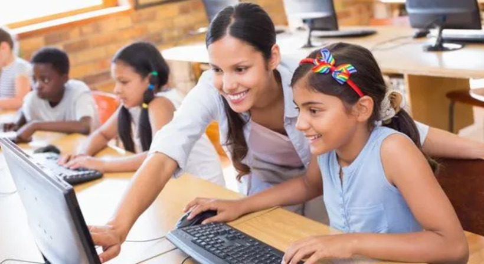

Educação Digital para Jovens
Capacitamos jovens de comunidades carentes com habilidades em informática e programação, preparando-os para o mercado de trabalho e para um futuro digital. As aulas acontecem duas vezes por semana e já formaram mais de 100 alunos.